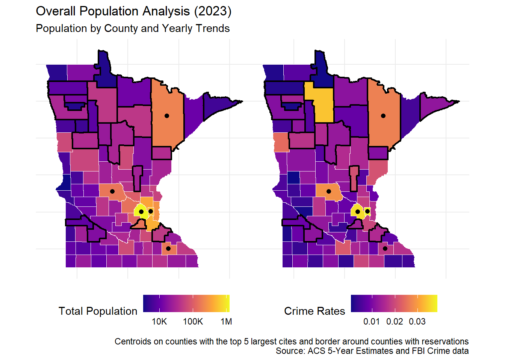
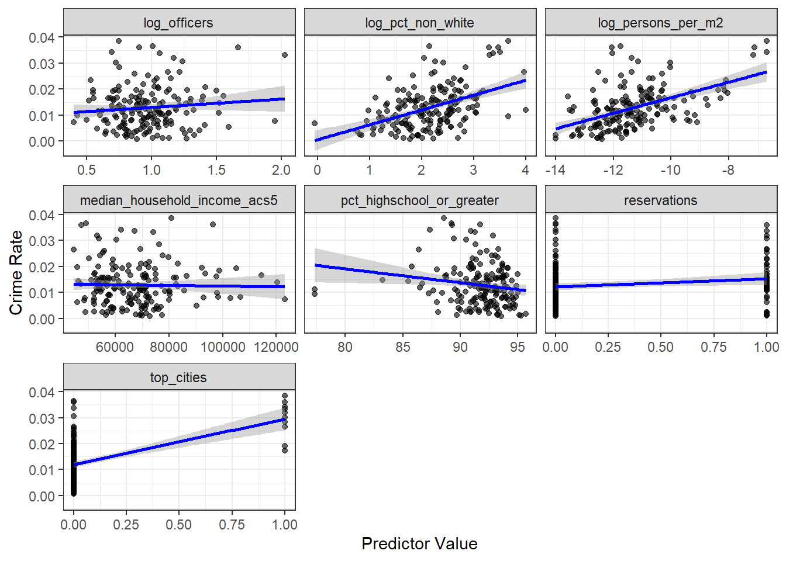

# Base map for year 2023data_2023 <- mapping_yearly_data |>filter(year ==2023)# Compute centroids only for the top citiescity_centroids <- data_2023 |>filter(top_cities ==1) |>st_centroid()# Plot A — populationa <-ggplot(data_2023) +geom_sf(aes(fill = total_population_acs5), color ="white") +# black border for reservationsgeom_sf(data =subset(data_2023, reservations ==1),fill =NA,color ="black",size = .75 ) +# Black dot at centroid for top citiesgeom_sf(data = city_centroids,color ="black", size =1.8 ) +scale_fill_viridis_c(option ="plasma",trans ="log10",name ="Total Population",labels = scales::label_number(scale_cut = scales::cut_short_scale()) ) +theme_minimal() +theme(axis.text =element_blank(),axis.ticks =element_blank(),legend.position ="bottom",plot.margin =margin(0, 0, 0, 0) )# Plot B — crime rateb <-ggplot(data_2023) +geom_sf(aes(fill = crime_rate), color ="white") +geom_sf(data =subset(data_2023, reservations ==1),fill =NA,color ="black",size = .75 ) +# Black dot at centroid for top citiesgeom_sf(data = city_centroids,color ="black", size =1.8 ) +scale_fill_viridis_c(option ="plasma",name ="Crime Rates" ) +theme_minimal() +theme(axis.text =element_blank(),axis.ticks =element_blank(),legend.position ="bottom",plot.margin =margin(0, 0, 0, 0) )# Combine with patchworka + b +plot_annotation(title ="Overall Population Analysis (2023)",subtitle ="Population by County and Yearly Trends",caption ="Centroids on counties with the top 5 largest cites and border around counties with reservations Source: ACS 5-Year Estimates and FBI Crime data" )

# Monthly totalsmonthly_ts <- crime_data |>group_by(month) |>summarise(homicides =sum(homicides), .groups ="drop") |>mutate(type ="Monthly") # Add type for plotting# Yearly totalsyearly_ts <- crime_data |>group_by(year, county) |>summarise(population =first(total_population_acs1), # take one value per countyhomicides =sum(homicides, na.rm =TRUE),.groups ="drop" ) |>group_by(year) |>summarise(population =sum(population, na.rm =TRUE), # now only sum once per countyhomicides =sum(homicides, na.rm =TRUE),.groups ="drop" ) |>mutate(month =as.Date(paste0(year, "-01-01")),type ="Yearly" ) |>select(month, homicides, population, type)# plotting dfcombined_ts <-bind_rows(monthly_ts, yearly_ts)# show the reasons for using yearly data due to how monthly is reportedggplot(combined_ts, aes(x = month, y = homicides, color = type)) +geom_line(size =1) +geom_point(data =subset(combined_ts, type =="Yearly"), size =2) +# emphasize yearly pointsscale_color_manual(values =c("Monthly"="steelblue", "Yearly"="darkblue")) +theme_minimal() +labs(title ="Minnesota Homicides Over Time", x ="Date", y ="Homicides", color ="Time Period")+theme(legend.position =c(0.1, 0.8), # normalized coordinateslegend.background =element_rect(fill =alpha("white", 0.6)), # optional transparent boxlegend.title =element_text("Time Period"))
Warning: Using `size` aesthetic for lines was deprecated in ggplot2 3.4.0.
ℹ Please use `linewidth` instead.
Warning in grid.Call(C_stringMetric, as.graphicsAnnot(x$label)): font family
not found in Windows font database
Warning in grid.Call(C_textBounds, as.graphicsAnnot(x$label), x$x, x$y, : font
family not found in Windows font database
Warning in grid.Call.graphics(C_text, as.graphicsAnnot(x$label), x$x, x$y, :
font family not found in Windows font database
# refactor yearly_ts data to only contain acs1 counties to compare homicide rates to population countsyearly_ts <- acs_1_yearly_data|>group_by(year)|>summarise(population =sum(total_population_acs1),homicides_pc =sum(homicides)/sum(total_population_acs1),across(c(arson, assaults, burglary, gta, homicides, larceny, rape, robbery), sum))|>mutate(crime_rate = (arson+assaults+burglary+gta+homicides+larceny+rape+robbery)/population)# show homicides vs population relationship# Compute a scaling factor to map population into homicide scalescale_factor <-max(yearly_ts$crime_rate, na.rm =TRUE) /max(yearly_ts$population, na.rm =TRUE)ggplot(yearly_ts, aes(x = year)) +# Population line (left axis, true scale)geom_line(aes(y = population, color ="Population"), size =1, linetype ="dashed") +geom_point(aes(y = population, color ="Population"), size =2) +# Homicides line (right axis, scaled down)geom_line(aes(y = crime_rate / scale_factor, color ="General Crime Rate"), size =1) +geom_point(aes(y = crime_rate / scale_factor, color ="General Crime Rate"), size =2) +scale_y_continuous(name ="Population",sec.axis =sec_axis(~ . * scale_factor, name ="General Crime Rate") ) +scale_color_manual(values =c("Population"="firebrick", "General Crime Rate"="purple") ) +theme_minimal() +labs(title ="Minnesota Population vs Crime Rates Over Time for ACS1 Counties",x ="Year",color ="",caption ="Source: ACS1 estimates; using Decennial counts for 2020" )+theme(legend.position =c(0.2, 0.2), # normalized coordinateslegend.background =element_rect(fill =alpha("white", 0.6)), # optional transparent boxlegend.title =element_blank())
scale_factor <-max(yearly_ts$homicides_pc, na.rm =TRUE) /max(yearly_ts$crime_rate, na.rm =TRUE)ggplot(yearly_ts, aes(x = year)) +# Homicides per capita (true scale, left axis)geom_line(aes(y = homicides_pc, color ="Homicides per Capita"), size =1) +geom_point(aes(y = homicides_pc, color ="Homicides per Capita"), size =2) +# General crime rate (scaled, right axis)geom_line(aes(y = crime_rate * scale_factor, color ="General Crime Rate"), size =1, linetype ="dashed") +geom_point(aes(y = crime_rate * scale_factor, color ="General Crime Rate"), size =2) +# Two axesscale_y_continuous(name ="Homicides per Capita",sec.axis =sec_axis(~ . / scale_factor, name ="General Crime Rate") ) +# Colors and labelsscale_color_manual(values =c("Homicides per Capita"="darkblue", "General Crime Rate"="purple") ) +theme_minimal() +labs(title ="Homicides per Capita vs General Crime Rate (ACS1 Counties)",x ="Year",color ="",caption ="Source: FBI Crime data and ACS1 estimates" )
acs_1_yearly_data|>ggplot(aes(x = homicides/total_population_acs1))+geom_density()+theme_minimal()+labs(title ="Density of Minnesota Homicides by County by Year", x ="Homicides per Capita per Year", y =NULL, caption ="Source: FBI Crime data, and ACS1 estimates; using Decennial counts for 2020")
acs_1_yearly_data|>ggplot(aes(x = crime_rate))+geom_density()+theme_minimal()+labs(title ="Density of Minnesota Crime Rates by County by Year", x ="Crimes per Capita per Year", y =NULL, caption ="Source: FBI Crime data, and ACS1 estimates; using Decennial counts for 2020")
### correlation matrix# cor is off because of serial and inter county correlationtarget <-"homicide_rate"lapply(setdiff(modeling_vars, target), function(var) { test <-cor.test( acs_1_yearly_data[[target]], acs_1_yearly_data[[var]],method ="pearson" )data.frame(variable = var,estimate = test$estimate,p.value = test$p.value )}) |>bind_rows()
# starting mixed effects model with one measure of each social disorganization factor# random effect by county to allow for different relationships# simple periods variable to account for time seriesmodel_lag1 <-lmer(crime_rate ~ officers + pct_lessthan_5kincome + pct_highschool_or_greater + pct_children_missing_parents + pct_non_white + Binge.drinking.prevalence + pct_young_males + persons_per_m2 + periods + crime_rate_lag1 + (1| county), data = acs_1_yearly_data)
Warning: Some predictor variables are on very different scales: consider
rescaling
# many insignificant predictorssummary(model_lag1)
Linear mixed model fit by REML ['lmerMod']
Formula:
crime_rate ~ officers + pct_lessthan_5kincome + pct_highschool_or_greater +
pct_children_missing_parents + pct_non_white + Binge.drinking.prevalence +
pct_young_males + persons_per_m2 + periods + crime_rate_lag1 +
(1 | county)
Data: acs_1_yearly_data
REML criterion at convergence: -1652.1
Scaled residuals:
Min 1Q Median 3Q Max
-3.11553 -0.54138 -0.05841 0.52789 2.70921
Random effects:
Groups Name Variance Std.Dev.
county (Intercept) 6.541e-06 0.002558
Residual 3.304e-06 0.001818
Number of obs: 187, groups: county, 15
Fixed effects:
Estimate Std. Error t value
(Intercept) -9.203e-03 1.823e-02 -0.505
officers 1.277e-04 2.584e-04 0.494
pct_lessthan_5kincome -1.811e-05 1.458e-04 -0.124
pct_highschool_or_greater 1.001e-04 1.391e-04 0.720
pct_children_missing_parents 3.872e-05 6.724e-05 0.576
pct_non_white -8.839e-05 8.129e-05 -1.087
Binge.drinking.prevalence 2.195e-04 5.584e-04 0.393
pct_young_males 3.675e-04 4.670e-04 0.787
persons_per_m2 8.993e+00 3.271e+00 2.749
periods -2.158e-04 8.390e-05 -2.572
crime_rate_lag1 6.497e-01 4.987e-02 13.027
Correlation of Fixed Effects:
(Intr) offcrs pct__5 pct_h__ pct_c__ pct_n_ Bng.d. pct_y_ prs__2
officers -0.017
pct_lssth_5 -0.147 0.055
pct_hghsc__ -0.686 -0.010 0.100
pct_chldr__ -0.130 0.047 0.081 -0.004
pct_non_wht -0.100 0.059 -0.066 0.120 0.004
Bng.drnkng. -0.685 -0.038 0.045 -0.019 -0.028 0.028
pct_yng_mls 0.011 0.079 -0.079 -0.090 0.175 -0.088 -0.095
prsns_pr_m2 -0.408 -0.144 0.037 0.072 -0.031 -0.493 0.504 0.079
periods 0.128 -0.040 0.213 -0.210 0.177 -0.795 -0.069 0.112 0.228
crim_rt_lg1 -0.007 0.066 -0.010 -0.058 0.045 -0.163 -0.038 0.018 -0.172
perids
officers
pct_lssth_5
pct_hghsc__
pct_chldr__
pct_non_wht
Bng.drnkng.
pct_yng_mls
prsns_pr_m2
periods
crim_rt_lg1 0.541
fit warnings:
Some predictor variables are on very different scales: consider rescaling
plot(model_lag1)
qqnorm(resid(model_lag1))qqline(resid(model_lag1), col ="red")
### vars to calculate stats across for modelingmodeling_vars <-c("crime_rate","officers", "median_household_income_acs5", "pct_lessthan_5kincome", "pct_highschool_or_greater", "pct_children_missing_parents", "pct_non_white", "Binge.drinking.prevalence", "pct_young_males", "persons_per_household", "persons_per_m2")### t test across pre/post covid for all explanatory variablespvals <- acs_5_yearly_data |>select(all_of(modeling_vars), post_covid) |>pivot_longer(-post_covid, names_to ="variable", values_to ="value") |>group_by(variable) |>summarise(ttest =list(t.test(value ~ post_covid, data =cur_data(), var.equal =FALSE)),.groups ="drop" ) |>mutate(p.value =map_dbl(ttest, ~ .x$p.value)) |>select(variable, p.value)
Warning: There was 1 warning in `summarise()`.
ℹ In argument: `ttest = list(t.test(value ~ post_covid, data = cur_data(),
var.equal = FALSE))`.
ℹ In group 1: `variable = "Binge.drinking.prevalence"`.
Caused by warning:
! `cur_data()` was deprecated in dplyr 1.1.0.
ℹ Please use `pick()` instead.
# Chow test using the 'post_covid' variable as the breakpointchow_test <- strucchange::sctest(total_model, type ="Chow", point =which(acs_5_yearly_data$post_covid ==1)[1])print(chow_test)
M-fluctuation test
data: total_model
f(efp) = 1.3747, p-value = 0.3434
# CUMSUM testcumsum_process <- strucchange::efp(total_model, type ="OLS-CUSUM", data = acs_5_yearly_data)# statistical test on the CUMSUM processcumsum_test <- strucchange::sctest(cumsum_process)print(cumsum_test)
F test to compare two variances
data: sqrt(acs_5_yearly_data$crime_rate) by acs_5_yearly_data$post_covid
F = 1.0128, num df = 86, denom df = 86, p-value = 0.9532
alternative hypothesis: true ratio of variances is not equal to 1
95 percent confidence interval:
0.6617759 1.5499067
sample estimates:
ratio of variances
1.012764
Levene's Test for Homogeneity of Variance (center = median)
Df F value Pr(>F)
group 1 0.0023 0.9617
172
target <-"crime_rate"# Pivot the data into long format for facetingfacet_data <- acs_5_yearly_data |>pivot_longer(cols =all_of(setdiff(modeling_vars, target)),names_to ="variable",values_to ="value" )# Make one big faceted plotggplot(facet_data, aes(x = value, y = .data[[target]])) +geom_point(alpha =0.6) +geom_smooth(method ="lm", color ="blue", se =TRUE) +facet_wrap(~ variable, scales ="free_x") +labs(x ="Predictor Value",y ="Crime Rate" ) +theme_bw()
`geom_smooth()` using formula = 'y ~ x'

# why does officers change in significance?acs_5_yearly_data|>filter(post_covid ==0)|>ggplot(aes(x = officers, y = crime_rate))+geom_point()+geom_smooth(se = F, method ="lm")
# dont see too much when taking the difference and comparing to explanatory census variables# might need to average/ estimate with the crime data in a similar way to the acs5 groupingmodeling_vars <-c("crime_rate", "log_officers", "median_household_income_acs5", "pct_lessthan_5kincome", "pct_highschool_or_greater", "log_pct_non_white", "log_persons_per_m2")acs_5_yearly_data_diff <- acs_5_yearly_data|>group_by(county)|>summarise(across(all_of(modeling_vars), ~ (.x[post_covid ==1] - .x[post_covid ==0]),.names ="{.col}_diff"))modeling_vars_diff <-paste0(modeling_vars[-1], "_diff") # drop crime_rate, add _diffmodel_diff <-lm(formula =as.formula(paste("crime_rate_diff ~", paste(modeling_vars_diff, collapse =" + ")) ),data = acs_5_yearly_data_diff)diff_tbl <-tidy(model_diff) |>select(term, estimate, std.error, statistic, p.value) |>mutate(std.error =round(std.error, 3),p.value =round(p.value, 3) ) |>mutate(Model ="Differenced Model") |>select(Model, term, estimate, std.error, p.value)kbl(diff_tbl, caption ="Regression Model for Differences in Crime Rate") |>kable_styling("striped", full_width =FALSE) |>group_rows("Difference Model", 1, nrow(diff_tbl))